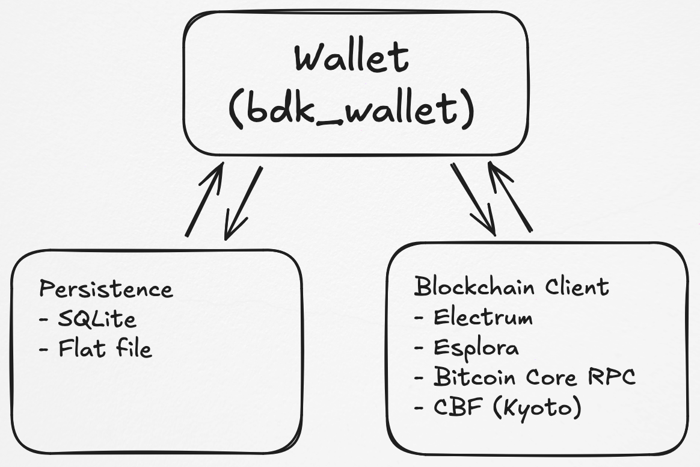

Simple Starter Example¶
Overview¶
So you want to build a bitcoin wallet using BDK. Great! Here is the rough outline of what you need to do just that. A standard, simple example of a bitcoin wallet in BDK-land would require 3 core pillars:

- The
bdk_walletlibrary, which will provide two core types: theWalletand theTxBuilder. This library will handle all the domain logic related to keeping track of which UTXOs you own, what your total balance is, creating and signing transactions, etc. - A blockchain client. Your wallet will need to keep track of blockchain data, like new transactions that have been added to the blockchain that impact your wallet, requesting these transactions from a Bitcoin Core node, an Electrum or Esplora server, etc.
- A persistence mechanism for saving wallet data between sessions (note that this is not actually required). Things like which addresses the wallet has revealed and what is the state of the blockchain on its last sync are things that are kept in persistence and can be loaded on startup.
Diving in!¶
This page provides a starter example showcasing how BDK can be used to create, sync, and manage a wallet using an Esplora client as a blockchain data source. Familiarity with this example will help you work through the more advanced pages in this section.
You can find working code examples of this example in two programming languages: Swift and Kotlin. (Note: some additional language bindings are available for BDK, see 3rd Party Bindings).
Tip
To complete this example from top to bottom, you'll need to create new descriptors and replace the ones provided. Once you do so, you'll run the example twice; on first run the wallet will not have any balance and will exit with an address to send funds to. Once that's done, you can run the example again and the wallet will be able to perform the later steps, namely creating and broadcasting a new transaction.
Create a new project¶
Add required dependencies¶
- From the Xcode File menu, select Add Package Dependencies...
- Enter
https://github.com/bitcoindevkit/bdk-swiftinto the package repository URL search field and bdk-swift should come up - For the Dependency Rule select
Exact Version, enter the version number (same as Package.swift) and click Add Package
Use descriptors¶
To create a wallet using BDK, we need some descriptors for our wallet. This example uses public descriptors (meaning they cannot be used to sign transactions) on Signet. Step 7 and below will fail unless you replace those public descriptors with private ones of your own and fund them using Signet coins through a faucet. Refer to the Creating Descriptors page for information on how to generate your own private descriptors.
Warning
Note that if you replace the descriptors after running the example using the provided ones, you must delete or rename the database file or will get an error on wallet load.
let descriptor = try Descriptor(descriptor: "tr([12071a7c/86'/1'/0']tpubDCaLkqfh67Qr7ZuRrUNrCYQ54sMjHfsJ4yQSGb3aBr1yqt3yXpamRBUwnGSnyNnxQYu7rqeBiPfw3mjBcFNX4ky2vhjj9bDrGstkfUbLB9T/0/*)#z3x5097m", network: Network.signet)
let changeDescriptor = try Descriptor(descriptor: "tr([12071a7c/86'/1'/0']tpubDCaLkqfh67Qr7ZuRrUNrCYQ54sMjHfsJ4yQSGb3aBr1yqt3yXpamRBUwnGSnyNnxQYu7rqeBiPfw3mjBcFNX4ky2vhjj9bDrGstkfUbLB9T/1/*)#n9r4jswr", network: Network.signet)
val descriptor = Descriptor("tr([12071a7c/86'/1'/0']tpubDCaLkqfh67Qr7ZuRrUNrCYQ54sMjHfsJ4yQSGb3aBr1yqt3yXpamRBUwnGSnyNnxQYu7rqeBiPfw3mjBcFNX4ky2vhjj9bDrGstkfUbLB9T/0/*)#z3x5097m", Network.SIGNET)
val changeDescriptor = Descriptor("tr([12071a7c/86'/1'/0']tpubDCaLkqfh67Qr7ZuRrUNrCYQ54sMjHfsJ4yQSGb3aBr1yqt3yXpamRBUwnGSnyNnxQYu7rqeBiPfw3mjBcFNX4ky2vhjj9bDrGstkfUbLB9T/1/*)#n9r4jswr", Network.SIGNET)
These are taproot descriptors (tr()) using public keys on Signet (tpub) as described in BIP86. The first descriptor is an HD wallet with a path for generating addresses to give out externally for payments. The second one is used by the wallet to generate addresses to pay ourselves change when sending payments (remember that UTXOs must be spent in full, so you often need to make change).
Create or load a wallet¶
Next let's load up our wallet.
let wallet: Wallet
let connection: Connection
if FileManager.default.fileExists(atPath: dbFilePath.path) {
print("Loading up existing wallet")
connection = try Connection(path: dbFilePath.path)
wallet = try Wallet.load(
descriptor: descriptor,
changeDescriptor: changeDescriptor,
connection: connection
)
} else {
print("Creating new wallet")
connection = try Connection(path: dbFilePath.path)
wallet = try Wallet(
descriptor: descriptor,
changeDescriptor: changeDescriptor,
network: Network.signet,
connection: connection
)
}
val persistenceExists = File(PERSISTENCE_FILE_PATH).exists()
val connection = Connection(PERSISTENCE_FILE_PATH)
val wallet = if (persistenceExists) {
println("Loading up existing wallet")
Wallet.load(
descriptor = descriptor,
changeDescriptor = changeDescriptor,
connection = connection
)
} else {
println("Creating new wallet")
Wallet(
descriptor = descriptor,
changeDescriptor = changeDescriptor,
network = Network.SIGNET,
connection = connection
)
}
Sync the wallet¶
Now let's build an Esplora client and use it to request transaction history for the wallet.
let esploraClient = EsploraClient(url: "https://blockstream.info/signet/api/")
let fullScanRequest = try wallet.startFullScan().build()
let update = try esploraClient.fullScan(
request: fullScanRequest,
stopGap: UInt64(10),
parallelRequests: UInt64(1)
)
try wallet.applyUpdate(update: update)
let balance = wallet.balance()
print("Wallet balance: \(balance.total.toSat()) sat")
val esploraClient: EsploraClient = EsploraClient(SIGNET_ESPLORA_URL)
val fullScanRequest: FullScanRequest = wallet.startFullScan().build()
val update = esploraClient.fullScan(
request = fullScanRequest,
stopGap = 10uL,
parallelRequests = 1uL
)
wallet.applyUpdate(update)
val balance = wallet.balance().total.toSat()
println("Balance: $balance")
In cases where you are using new descriptors that do not have a balance yet, the example will request a new address from the wallet and print it out so you can fund the wallet. Remember that this example uses Signet coins!
if (balance.total.toSat() < UInt64(5000)) {
print("Your wallet does not have sufficient balance for the following steps!");
let address = wallet.revealNextAddress(keychain: KeychainKind.external)
print("Send Signet coins to address \(address.address) (address generated at index \(address.index))")
try wallet.persist(connection: connection)
exit(0)
}
if (balance < 5000uL) {
println("Your wallet does not have sufficient balance for the following steps!");
val address = wallet.revealNextAddress(KeychainKind.EXTERNAL)
println("Send Signet coins to address ${address.address} (address generated at index ${address.index})")
wallet.persist(connection)
exitProcess(0)
}
Send a transaction¶
For this step you'll need a wallet built with private keys, funded with some Signet satoshis. You can find a faucet here to get some coins.
Let's prepare to send a transaction. The two core choices here are where to send the funds and how much to send. We will send funds back to the faucet return address; it's good practice to send test sats back to the faucet when you're done using them.
val esploraClient: EsploraClient = EsploraClient(SIGNET_ESPLORA_URL)
val fullScanRequest: FullScanRequest = wallet.startFullScan().build()
val update = esploraClient.fullScan(
request = fullScanRequest,
stopGap = 10uL,
parallelRequests = 1uL
)
wallet.applyUpdate(update)
val balance = wallet.balance().total.toSat()
println("Balance: $balance")
Here we are sending 5000 sats back to the faucet (make sure the wallet has at least this much balance, or change this value).
Finally we are ready to build, sign, and broadcast the transaction:
let psbt: Psbt = try TxBuilder()
.addRecipient(script: faucetAddress.scriptPubkey(), amount: amount)
.feeRate(feeRate: try FeeRate.fromSatPerVb(satPerVb: UInt64(7)))
.finish(wallet: wallet)
try wallet.sign(psbt: psbt)
let tx: Transaction = try psbt.extractTx()
esploraClient.broadcast(tx)
print("Transaction broadcast successfully! Txid: \(tx.computeTxid())")
val psbt: Psbt = TxBuilder()
.addRecipient(script = faucetAddress.scriptPubkey(), amount = amount)
.feeRate(FeeRate.fromSatPerVb(7uL))
.finish(wallet)
wallet.sign(psbt)
val tx: Transaction = psbt.extractTx()
esploraClient.broadcast(tx)
println("Transaction broadcast successfully! Txid: ${tx.computeTxid()}")
We can view our transaction on the mempool.space Signet explorer.